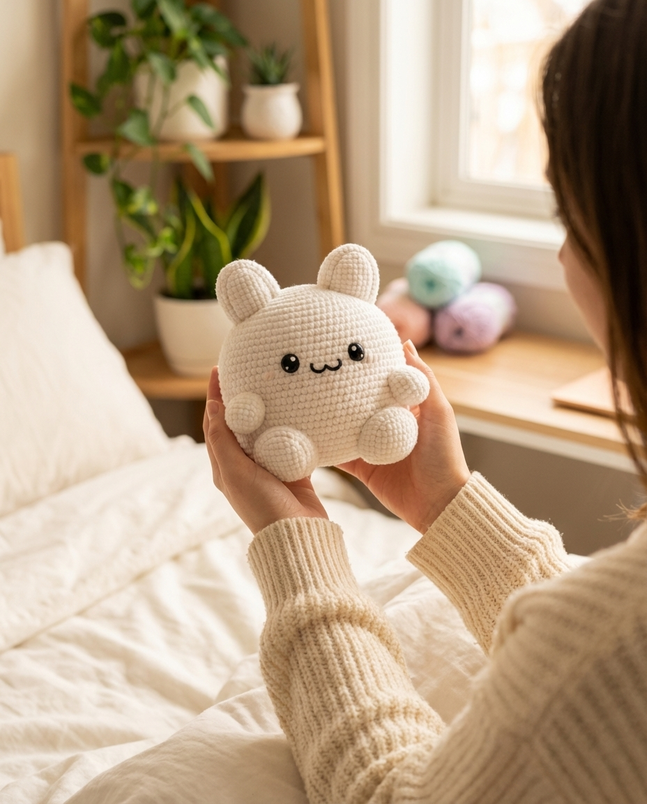

ameruアメル
らぶいーず

AMIGURUMI KIT FOR EVERYONE
はじめての私でも、
はじめての私でも、
ちゃんと、すもっぴ。
— 編み始め、完成済み。
— 編み始め、完成済み。
編みものなんて、きっと縁がないと思っていた。
ameru が届いてから、
少しだけ、時間の過ごし方が変わった。



毎月、わたしの手から
すもっぴが、ひとり増える。
— ameruは、編みものの定期便です。
道具も糸も動画も、ぜんぶ入っています。
何も足さなくていい。
届いたら、すぐに編みはじめられる。

パッケージそのものが、インテリアに馴染む設計。まず飾りたくなる。

オリジナル糸・かぎ針・とじ針・目パーツ・わた・編み始め完成済みパーツ。買い足し不要。
難しい編み図は一切使いません。動画を見るだけで、全工程がわかります。
最初の一目は、
わたしが、いりません。
手芸でいちばん挫折しやすい「最初」を、
ameru があらかじめ編んでおきました。
だから、届いたときにはもう、半分できている。
初心者が手芸でつまずくのは、いつも「最初の数段」です。
ここさえ越えれば、ほとんどの人は最後まで編めます。
だから ameru は、一番つらい数段を肩代わりしました。
やさしく、でも「自分で編んだ」と胸を張れる分量を、ちょうどよく。
らぶいーず × ameru の 全5体すもっぴ。
毎月ひとり、わたしの家族が増えていく。

はじめてかぎ針を持った人ばかりです。
それでも、ちゃんと、すもっぴになっている。
★★★★★
手芸は小学校以来でした。正直「どうせ途中でやめる」と思ってたのに、動画を見ながらだと迷う場面がゼロで、気づいたら完成してて自分でびっくり。できあがったすもっぴを机に置いたら、毎日ちょっと嬉しいです。
★★★★★
娘の誕生日に渡すつもりが、あまりに可愛くて自分のデスクに飾ってしまいました。次号で娘の分も作ります。「編み始め完成済み」っていう発想、これが天才。糸玉からやってたら絶対挫折していたと思います。
★★★★★
推し活で何か作りたくて、でも不器用で諦めていたんですが、ameruなら本当に「作れる」側の手芸でした。毎月1体ずつ増えていくのが楽しみで、友達にも勧めてます。
届く → 編む → 飾る → 次が届く。
それだけの、シンプルな毎月。
ポストに入る薄さで届きます。大きい段ボールは、来ません。
編み図は読みません。スマホで動画を観ながら手を動かします。
2〜3日かけて少しずつ、でも大丈夫。自分のペースで。
棚に並べても、誰かに贈っても。すもっぴは、あなたの作品。
5体そろうまで、毎月お届けします。いつでもお休みできます。
— 月ひとり、わたしの家族が増えていく。
いつでも
解約OK
縛りなし
初回
送料無料
¥1,980〜
全工程
動画解説
編み図不要
初回はお試し価格の ¥1,980。
続けるかは、1体編んでみてから決めてください。
1回目（No.1 すもっぴ + 全道具セット）
¥1,980（税込・送料無料）
通常 ¥4,200
52% OFF
かぎ針編み、本当に初めてでもできますか？
はい。ameruは初心者の方向けに設計されています。いちばん難しい最初の数段はあらかじめ編んであり、動画でも全工程を解説しています。
どれくらいの時間でできあがりますか？
ゆっくり編んで8〜10時間ほど。2〜3日かけて少しずつ進める方が多いです。
途中で解約できますか？
はい。次回発送日の7日前までにマイページからお手続きください。縛り期間はありません。
途中で失敗してしまったら？
動画の該当シーンを何度でも見返せます。お問い合わせいただければ、編み方のご質問にも個別で対応します。
画像差し替えだけで実戦投入可能な構造。全画像スロットは `figure.img-slot` で明示。
詳細な撮影指示は `reports/ameru_lp_v4_image_spec.md` を参照。